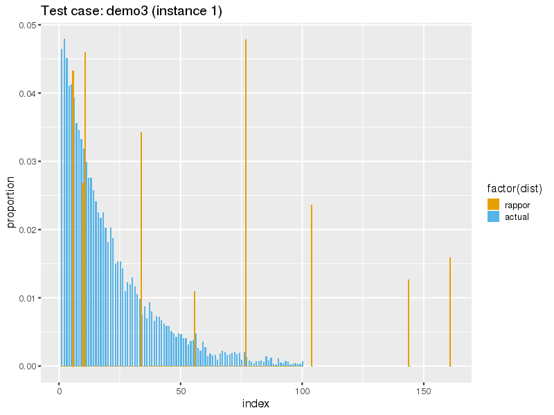

| Test Case | Input Params | RAPPOR Params | Map Params | Result Metrics | |||||||||||||||
|
d: distribution drawn from u: total unique values c: clients v: values per client |
k: report bits h: hashes m: cohorts p, q, f: probabilities |
+: num additional candidates -: regex for true values removed |
a: actual values r: values RAPPOR detected fp: false positive rate fn: false negative rate tv: total variation distance am: allocated mass time: time in seconds |
||||||||||||||||
| d | u | c | v | k | h | m | p | q | f | + | - | a | r | fp | fn | tv | am | time | |
| demo3 | exp | 100 | 1000 | 10 | 32 | 1 | 64 | 0.25 | 0.75 | 0.5 | 100 | v[0-9]*9$ | 100 | 9 | 3.0% (3) | 94.0% (94) | 0.521 | 0.261 | |
| Means | 3.0%±0.3% | 94.0%±9.4% | 52.1%±5.2% | 26.1%±2.6% | |||||||||||||||
